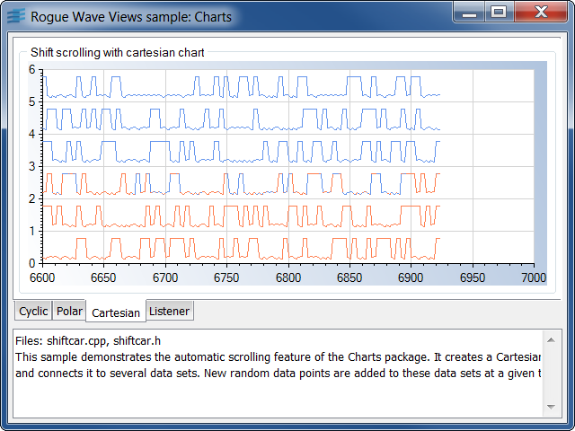
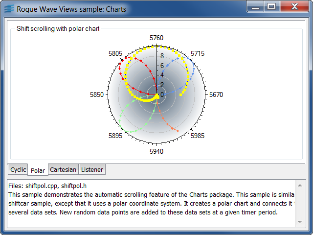
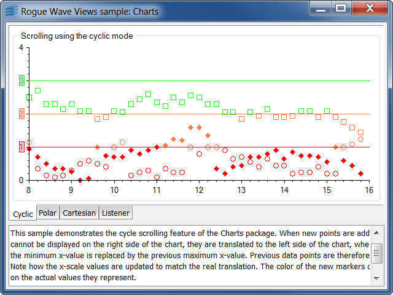
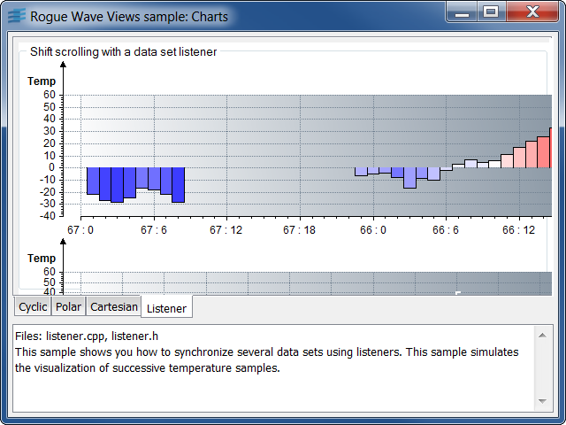

shiftcarDemonstration of the automatic shift scroll mode of the charts.
This sample demonstrates the automatic scrolling feature of
the Rogue Wave Views Charts package. It creates a Cartesian chart and connects it to
several data sets. New random data points are added to these data sets at a
given timer period. You can specify this period, in milliseconds, as the only
parameter of the command line. For example, to add new points every 100
milliseconds, run:
shiftcar 100.
In the code of this sample, you can specify several other values:
NbAddedPts).NbShownPts).NbDisplayers).The timer can be suspended by pressing the 's' key, and resumed by pressing the 'r' key.
IlvCartesianChartIlvChartYValueSetIlvPolylineChartDisplayershiftpolDemonstration of the automatic shift scroll mode of the charts.
This sample demonstrates the automatic scrolling feature of
the Rogue Wave Views Charts package. This sample is similar to the shiftcar sample,
except that it uses a polar coordinate system. It creates a polar chart and
connects it to several data sets. New random data points are added to these
data sets at a given timer period. You can specify this period, in milliseconds,
as the only parameter of the command line. For example, to add new points every
100 milliseconds, run:
shiftpol 100.
In the code of this sample, you can specify several other values:
NbAddedPts).NbShownPts).NbDisplayers).The timer can be suspended by pressing the 's' key, and resumed by pressing the 'r' key.
IlvPolarChartIlvChartPointSetIlvPointInfoMapIlvChartDataPointInfoIlvMarkedPolylineChartDisplayercyclicDemonstration of the automatic cycle scroll mode of the charts.
This sample demonstrates the cycle scrolling feature of the Rogue Wave Views Charts package.
When new points are added and cannot be displayed on the right side of the
chart, they are translated to the left side of the chart, where the minimum
x-value is replaced by the previous maximum x-value. Previous data points
are therefore dropped.
Note how the x-scale values are updated to match the real translation. The color
of the new markers depends on the actual values they represent.
You can specify the period of the timer, in milliseconds, as the only parameter
of the command line. For example, to add new points every 100 milliseconds, run:
cyclic 100.
The timer can be suspended by pressing the 's' key, and resumed by pressing the 'r' key.
IlvCartesianChartIlvChartPointSetIlvPointInfoMapIlvChartDataPointInfoIlvScatterChartDisplayerlistenerSynchronization of several data sets using listeners.
This sample shows you how to synchronize several data sets using listeners. This sample simulates the visualization of successive temperature samples. To do this, it uses two chart objects:
These four data sets are updated through a listener set
on the temperature data set. This listener is notified
whenever a new measure is available and updates the
high/low start/end values accordingly. To render these
data sets, an instance of IlvHiLoOpenCloseChartDisplayer
is used. The color of the start-end bar depends on
whether the temperature at the end of the day is greater
or lower than the temperature at the beginning of the
day.
Every drawing update (scrolling/invalidation of the variations display) is carried out automatically by the chart.
IlvCartesianChartIlvChartDataSetListenerIlvChartYValueSetIlvBarChartDisplayerIlvHiLoOpenCloseChartDisplayerIlvChartLegend